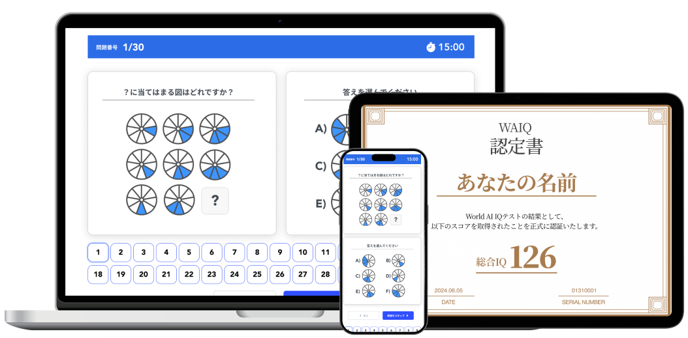
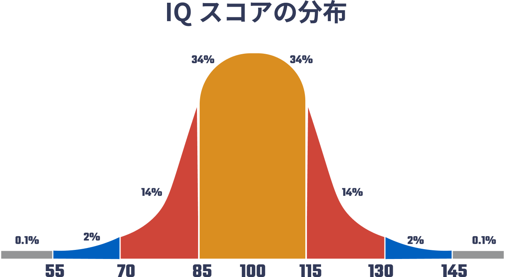

メンサクラスのWAIQテスト研究チームが作成した40問で、IQスコア・上位何%か・4領域の認知プロファイルを測定。テスト完了後すぐに結果が保存され、IQ認定書と詳細な頭脳分析レポートを受け取れます。
IQテスト開始 →
公式国際標準IQ診断テストは、潜在的知的能力を正確に測定するためにメンサクラスのWAIQテスト研究チームが作成した、楽しく挑戦的な問題で構成されています。

IQは平均100・標準偏差15の正規分布で定義され、約68%が85〜115に、約2%が130以上に入ります。あなたのスコアがこの分布のどこに位置するかをレポートで示します。
選りすぐりの全40問で、あなたのIQと4領域の認知プロファイルを診断
高IQの、脳科学に詳しい専門家チームが作成
医療機関も提供する本格的なIQ診断をベースに開発したオリジナルの診断
診断結果は、WAIQ公認の診断結果となります。氏名・スコア・受験日入りの認定書を発行
図形推理・数的推理・言語論理・記憶のスコアと受験者割合、伸ばし方まで詳細なレポートをお届けします
累計ユーザー911,909人※3が受験した、人気の診断サイトの診断です
スコアの数字だけでなく、どの領域が強く、どこに伸ばす余地があるかまで分かります。
平均100・標準偏差15の尺度で算出したIQと、「極めて高い」などのスキルレベル判定。
上位何%に位置するかを分布カーブ上で表示。国別平均IQとも比較できます。
図形推理・数的推理・言語論理・記憶の4領域の強弱と、弱い領域の伸ばし方。
氏名・総合IQ・受験日・シリアル番号入りの認定書（PDF）。
40問・制限時間20分。図形の規則、数列、言語と論理、記憶の問題が交互に出題。易しい問題から段階的に難しくなります。
完了後すぐに結果が保存されます。総合IQ・評価・項目別分析・認定書をレポートで取得。
分析で見つかった伸ばす余地のある領域に、具体的なトレーニング方法を提示します。
日本の平均は105で世界5位。あなたのスコアは日本の平均を超えているでしょうか。
| 順位 | 国 | 平均IQ |
|---|---|---|
| 1 | シンガポール | 108 |
| 2 | 香港 | 108 |
| 3 | 台湾 | 106 |
| 4 | 韓国 | 106 |
| 5 | 日本 | 105 |
| 順位 | 国 | 平均IQ |
|---|---|---|
| 6 | 中国 | 104 |
| 15 | ドイツ | 100 |
| 16 | イギリス | 100 |
| 27 | フランス | 98 |
| 28 | アメリカ | 98 |
やっと自分のIQが知れてよかったです！興味はあったんですけど、なかなか知る機会はなく。でもこの診断なら、高精度でカンタンに受験できるので、見つけられてよかったです！
ただIQがわかるだけでも感謝ですが、さらに細かくいろんなことがレポートに詰まっていて、読んでいてとても勉強になりました。自分のことをよく知れて、大満足です。
総合IQだけでなく、複数の側面から、自分の脳の得意なことと苦手なことをスコアで出してもらえるのがいいですね。ほどよく難しい問題だし、答えがいもありました。
質問がクイズのようで、いい頭の体操になりました。診断を受けていてなんだか楽しかったです。IQの結果もすごくあっていると思うし、受けることができてよかったです。
自分のIQを詳しく分析してくれた上で、仕事や生活にどう活かすか？まで丁寧に分析してくれているのがよかったです。
テストの受験と結果の保存は無料です。総合IQ・評価・項目別分析・IQ認定書をまとめた詳細レポートの取得は有料です。料金は決済前のページに明記します。
違います。WAIS-Ⅳの診断意図を参考の一部に取り組んだオリジナルの診断で、実際の表現・内容・診断基準はWAIS-Ⅳとは異なります。医療・教育・採用上の判断には使用できません。
平均15分前後です。制限時間は全体で20分。残り時間は画面上部に表示されます。1問ごとの制限はありません。
易しい問題から始まり、後半は2〜3の規則が同時に成り立つ問題になります。全問正解を前提にしていないので、わからない問題は飛ばして構いません。
受けられますが、同じ問題なので2回目以降は数値が高く出ます。初回の結果を参考にしてください。